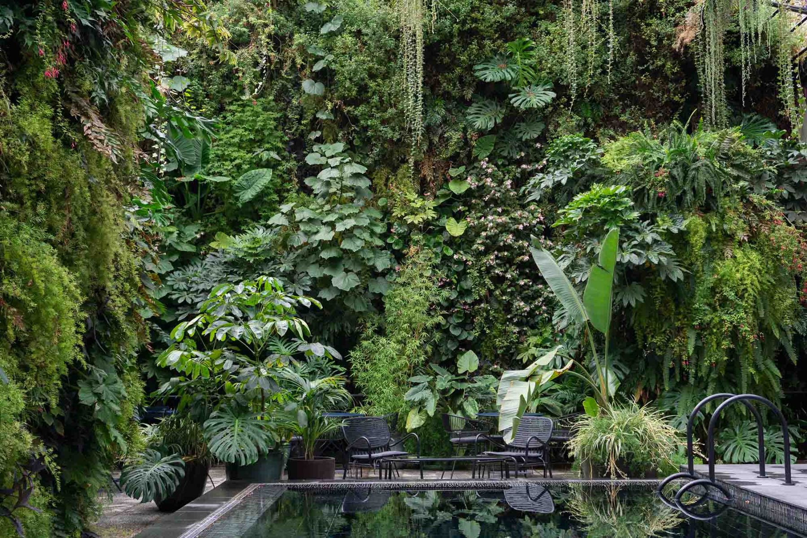
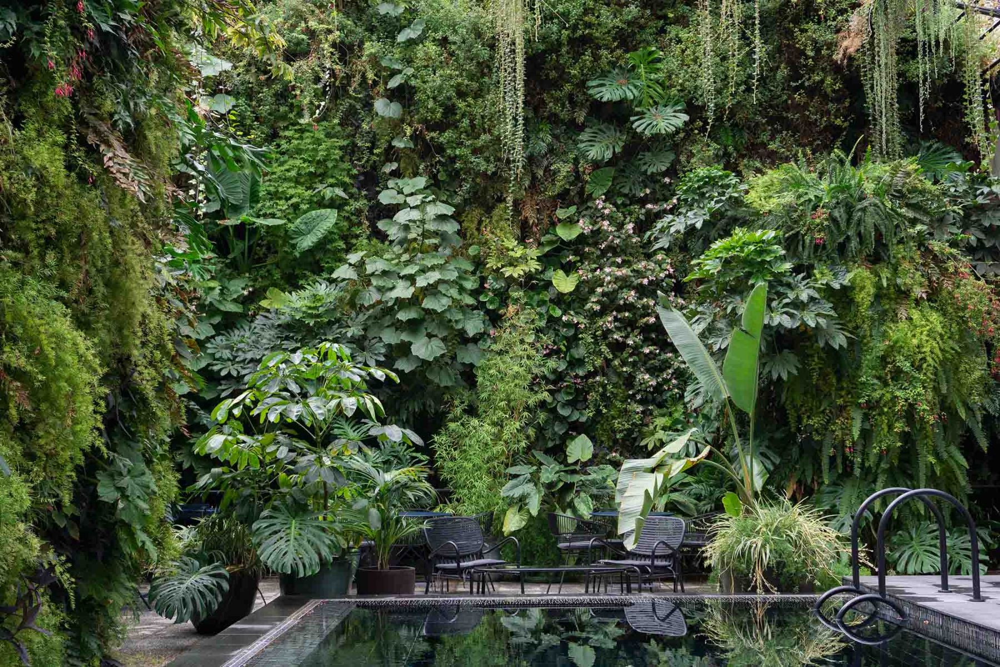

HOTEL HOTEL
A 150m2 vertical garden with three Pinnacles and suspended plant ceiling in a exterior courtyard of a new hotel. With approximately 200 plant varieties these walls create a lush, tropical oasis in the downtown of Lisbon. The protected location allows for exotic accent plants like Begonia, Philodendron, Monstera and Alocasia. The Pinnacles acts as room dividers and allow for private seating areas surrounded by plants.
Architect:Pedrita
Three Pinnacles in the outdoor pool and eating area.
 
